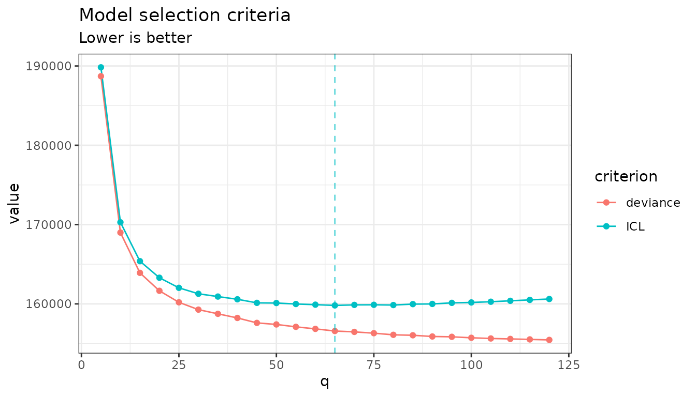

Mean-Block models: clustering variables by their response to covariates
Julien Chiquet, Nestor Ngalala Manguitini and Jeanne Tous
2026-09-11
Source:vignettes/mean-block-breast-cancer.Rmd
mean-block-breast-cancer.RmdPreliminaries
This vignette introduces the Mean-Block model
(model = "mean"), the second model family shipped with
normalblockr. Where the Normal-Block model of the
normal-block vignette puts the clustering in the latent
covariance, this one puts it in the mean: variables are
grouped by how their expected value responds to the covariates.
We use the same dataset as the breast-cancer-proteomics
vignette (?brca_rppa) on purpose, so that the two families
can be read side by side on the same data: 163 proteins measured on 346
breast-cancer tumor samples, with each sample’s PAM50 molecular subtype
as the covariate.
Mathematical background
The mean-block model is a Gaussian regression model for a table of observations (here, tumor samples and proteins) on covariates (here, the PAM50 subtype), in which the regression coefficients are shared within clusters of variables:
assigns every protein to exactly one of the clusters; it is either given (known clustering, e.g. from an independent source) or itself unknown and inferred jointly with everything else, in which case the model carries a variational posterior distribution over rather than a single point estimate. holds one regression profile per cluster, so is the linear predictor of each cluster for observation , which maps back onto the proteins. is the residual covariance between proteins; its shape is a modelling choice in its own right, and a section below is devoted to it. The key structural assumption is that all proteins in a cluster share the same regression profile: the regression part costs parameters instead of the of an unconstrained multivariate regression, with .
Contrast this with the Normal-Block model of the other vignettes, where structures and the covariates only enter through a variable-wise : there, two proteins are in the same cluster when they covary the same way; here, when they respond the same way. The two answer different questions and generally return different groupings: on this dataset they are essentially unrelated, which is a result rather than a defect.
See Tous and Chiquet (2026) for the Normal-Block model itself, and Ngalala Manguitini et al. (2026) (unpublished yet) for the mean-block family’s estimation details: the closed-form updates when is known, and the variational lower bound maximized when it is not.
The data
data(brca_rppa)
Y <- as.matrix(brca_rppa$expr)
X <- model.matrix(~ 0 + PAM50_SUBTYPE, data = brca_rppa$covariates)
nb_data <- NormalBlockData$new(Y, X)
dim(Y)
#> [1] 346 163
table(brca_rppa$covariates$PAM50_SUBTYPE)
#>
#> Basal-like HER2-enriched Luminal A Luminal B Normal-like
#> 66 43 150 82 5X has one indicator column per PAM50 subtype, so each
cluster’s profile
is simply its mean expression level in each of the five subtypes.
Clustering the proteins therefore amounts to grouping them by
subtype signature.
A known clustering
The dataset ships a Gene Ontology annotation (one biological-process
term per protein), which gives a clustering built with no reference to
the model at all. Handing it to normal_block() as a matrix
fixes
:
only
are estimated.
go_term <- factor(brca_rppa$gene_annotation$go_bp_term)
C_go <- model.matrix(~ 0 + go_term)
NB_go <- normal_block(nb_data, blocks = C_go, model = "mean",
control = NB_control(verbose = FALSE))
NB_go
#> A diagonal normal-block-mean model with fixed blocks .
#> ===========================================================================
#> nb_param q n_edges sparsity loglik deviance BIC ICL EBIC
#> 303 28 0 0 -123715.7 247431.5 249202.9 249202.9 249202.9
#> niter
#> 21
#> ===========================================================================
#> * Useful fields
#> $model_par, $posterior_par / $var_par, $clustering
#> $loglik, $BIC, $ICL, $objective, $nb_param, $criteria
#> * Useful S3 methods
#> print(), summary(), plot(), coef(), sigma(), fitted(), predict()The fitted B is a
matrix of subtype profiles, one column per GO term, and
fitted() maps them back onto the proteins:
dim(coef(NB_go))
#> [1] 5 28
plot(Y, fitted(NB_go), pch = ".", xlab = "observed", ylab = "fitted")
abline(0, 1, col = "red")
Letting the model infer the clustering
A collection over the number of clusters
With blocks a range of values,
normal_block() returns one fitted model per
.
The initial clustering of each is derived from every protein’s own
fitted profile – the ordinary least-squares fit of that protein on
alone, unconstrained by any clustering (see
NB_control(clustering_init = ); kmeans is this
family’s default).
NB_means <- normal_block(nb_data, blocks = seq(5, 120, by = 5), model = "mean",
control = NB_control(verbose = FALSE))The grid is deliberately wide and coarse. With the default diagonal
an extra cluster costs only
parameters, so the criteria stay hungry for a long time: on a narrow
range such as 1:15 they would still be decreasing at the
upper end, and “selecting” its boundary would mean nothing.
NB_means$plot(c("deviance", "ICL"))
selected <- NB_means$get_best_model("ICL")
paste0("ICL selects ", selected$q, " clusters.")
#> [1] "ICL selects 65 clusters."The model groups 163 proteins into a few dozen clusters, i.e. only a handful of proteins per cluster. It is saying that subtype signatures are largely protein-specific here, with limited sharing, a substantive finding about this dataset, not a failure of the fit. The criteria do turn: they reach an interior minimum and rise again afterwards, which is what makes the selection meaningful.
refine() is available to polish a collection, trying for
each
a short split-and-reoptimize seeded from its
neighbour and a merge from its
one, keeping a candidate only if it strictly lowers the deviance. It is
most useful on a contiguous range; on the coarse grid above there are no
adjacent
to seed from, so it is skipped here.
Reading the clusters
table(selected$clustering)
#>
#> 1 2 3 4 5 6 7 8 9 10 11 12 13 14 15 16 17 18 19 20 21 22 23 24 25 26
#> 1 1 1 3 1 1 7 1 2 2 3 4 4 3 2 3 4 1 2 4 3 4 1 2 2 1
#> 27 28 29 30 31 32 33 34 35 36 37 38 39 40 41 42 43 44 45 46 47 48 49 50 51 52
#> 2 3 1 2 2 2 4 1 3 8 2 1 3 2 3 2 3 2 2 4 3 5 4 2 2 1
#> 53 54 55 56 57 58 59 60 61 62 63 64 65
#> 1 3 3 2 2 3 1 2 4 1 4 1 4Each cluster’s profile across the five subtypes is a column of
coef(); a heatmap of that matrix is the most direct summary
of what the model found.
profiles <- coef(selected)
rownames(profiles) <- levels(brca_rppa$covariates$PAM50_SUBTYPE)
colnames(profiles) <- paste0("cluster ", seq_len(ncol(profiles)))
image(seq_len(nrow(profiles)), seq_len(ncol(profiles)), profiles,
axes = FALSE, xlab = "", ylab = "", col = hcl.colors(20, "RdBu", rev = TRUE))
axis(1, seq_len(nrow(profiles)), rownames(profiles), las = 2, cex.axis = .7)
axis(2, seq_len(ncol(profiles)), colnames(profiles), las = 2, cex.axis = .7)
Choosing the shape of the residual covariance
Everything above used the default residual covariance,
"diagonal" (one variance per variable). Two other shapes
are available through NB_control(noise_covariance = ):
"spherical" (a single variance) and "full"
(the unconstrained
matrix). Only the last one has to be inverted, so it alone requires
.
The default is deliberate. A full costs parameters here, which drown the handful of mean parameters that BIC and ICL are trying to weigh1
shapes <- c("diagonal", "spherical", "full")
fits <- lapply(shapes, function(s)
normal_block(nb_data, blocks = selected$q, model = "mean",
control = NB_control(verbose = FALSE, noise_covariance = s)))
data.frame(
covariance = shapes,
nb_param = sapply(fits, `[[`, "nb_param"),
loglik = round(sapply(fits, `[[`, "loglik"), 1),
BIC = round(sapply(fits, `[[`, "BIC"), 1)
)
#> covariance nb_param loglik BIC
#> 1 diagonal 552 -78289.8 159806.9
#> 2 spherical 390 -78558.2 159396.4
#> 3 full 13755 -45154.3 170726.4BIC agrees with the default here. That is not a reason to forget the full though: the three shapes answer different questions, and a diagonal one says nothing about how proteins co-vary once the subtype and the cluster structure are accounted for, which is what the next section looks at.
Sparsifying the residual covariance
If the residual associations are the object of interest, the
full
is required. Asking for sparsity > 0 selects it
automatically, since a penalty on a diagonal precision matrix would have
nothing to act on. A dense
precision matrix is unreadable though, and poorly determined from 346
observations. Keeping the selected clustering fixed, a graphical-lasso
penalty on
addresses both at once, turning it into a network of
conditional associations between proteins, given the subtype
and the cluster structure.
C_selected <- model.matrix(~ 0 + factor(selected$clustering))
NB_sparse <- normal_block(nb_data, blocks = C_selected, sparsity = 0.4,
model = "mean", control = NB_control(verbose = FALSE))
NB_sparse$model_par$Omega |> dim()
#> [1] 163 163
paste0(NB_sparse$n_edges, " edges out of ", choose(ncol(Y), 2), " possible ones.")
#> [1] "458 edges out of 13203 possible ones."
NB_sparse$plot_network(output = "corrplot")
Passing sparsity = TRUE instead of a single value
explores a whole path of penalties and returns a collection, selected by
BIC or EBIC as usual. Be aware that each penalty triggers a graphical
lasso on a
matrix at every EM iteration: on this dataset a full path costs
a couple of orders of magnitude more than the single fit above, which is
why a fixed penalty is used here.